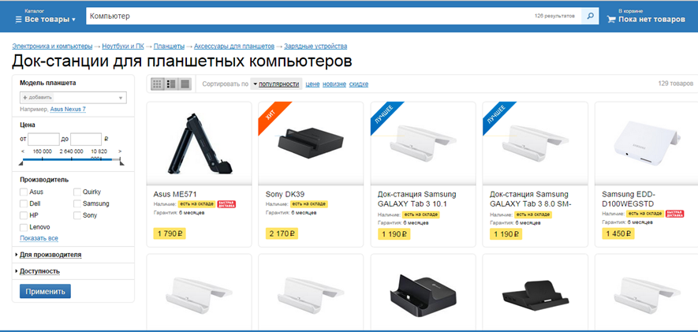
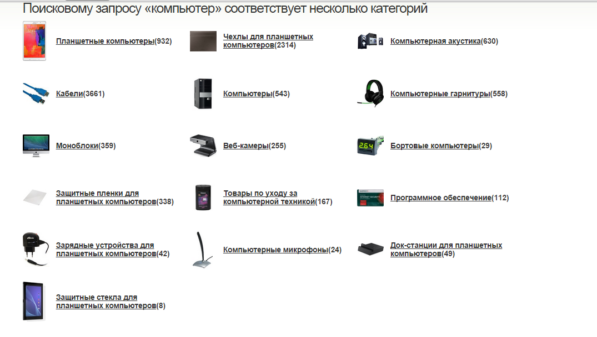
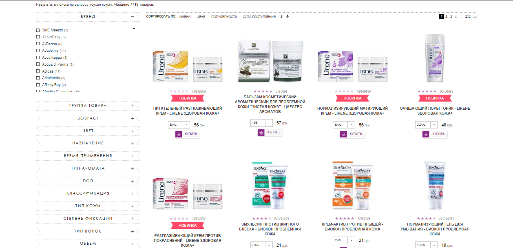

The main types of search queries that online store users use, is your website ready for them? (Part 1)
In one of the articles we have already considered what the search
should be, but then we touched on this issue from the point of view of
design and UX. In the article below, we will look at the main types of
requests that users use.
Analysis of the current situation in most online stores has shown that, despite the obviousness of the importance of fine-tuning such an effective tool as the search field, most sites do not pay enough attention to this. The most commonly used default settings are configured to inaccurate coincidence. This approach significantly reduces the functionality of the site and becomes a significant obstacle to the transformation of the user into a buyer.
Given the volume of information, it was decided to split the article into several parts.
1 Exact search
Quite often, the user knows what he is looking for. This situation occurs when a potential buyer has already made his choice, but compares the prices and conditions of various online stores. While scoring the exact name in the search, he expects to see the price of this product or a message that there is no such product available.
The problem arises from the fact that the name of the same product may vary. Different suppliers use a different approach to item names in their documentation. Someone uses a model, someone has a serial number, someone combines them, and someone adds their own parameters, partially changing the basic name of the product. Naturally, creating a heading in the online store, you should try to bring its name to the most common form, but this does not guarantee that the user will look for this particular option. In addition, the user is not insured against typos. At the same time, a typo is often completely imperceptible to the person who typed the text, and takes considerable time to detect it, especially for mobile devices.
All of the above means that the search should not only support the “search by exact match” option, but also allow you to find the desired product, despite all the difficulties. For this, it is necessary to “fix” a list of “synonyms” for each product item, which will be perceived by the search along with the main name. The search results should display exactly the name that the user entered, so as not to mislead him.
If the product is not in the online store, you must clearly inform the user, but at the same time provide him with a list of similar products, indicating the main characteristics and prices.
Despite the obvious need for such an approach, not all of the top online stores fully efficiently support accurate search.
2 Search categories
If the user resorts to search help in order to find a category, this should serve as a message that you should think about simplifying navigation on your site. But if your store offers a really large assortment, you still cannot avoid this situation.
It would seem that nothing could be simpler, but for some reason, on request for a “computer” in one of the largest online stores in Russia, I was provided with a wide selection of docking stations for tablets.
A very important aspect to support this type of query is to provide such results that will help the user find the product he needs, regardless of whether this category exists in your store or is included in another section. A great option is a list of categories to which the desired products may belong.
3 Search for symptoms
This criterion is critical for online stores of drugs and cosmetics. Often in such stores they are not looking for a specific product, but for a solution for a particular symptom. For example, on request "dry skin" in one of the online stores I offer a remedy for oily shine and cleansing gels for problem skin.
And this shop is not an isolated case. It is clear that the search is configured by inaccurate coincidence, which is often quite convenient, but does not cover a significant number of requests. Therefore, it is important to ensure that the basic properties of such products can serve as a criterion for the search.
4 Search for information or sections of the site
The design of some online stores makes it necessary to spend a decent time searching for delivery or return terms, acceptable methods of paying for an order or other information that is not related to the characteristics of the goods. A store that cares about its customers should issue something more informative on request “delivery” than in the picture below:
By the way, even a careful study of the top menu did not help to find a link to the desired information. Naturally, the first step is to make sure that the user does not have to resort to using the search to understand the features of your online store. But even if you think that you have done everything necessary for this, you should not limit your visitors.
Analysis of the current situation in most online stores has shown that, despite the obviousness of the importance of fine-tuning such an effective tool as the search field, most sites do not pay enough attention to this. The most commonly used default settings are configured to inaccurate coincidence. This approach significantly reduces the functionality of the site and becomes a significant obstacle to the transformation of the user into a buyer.
Given the volume of information, it was decided to split the article into several parts.
1 Exact search
Quite often, the user knows what he is looking for. This situation occurs when a potential buyer has already made his choice, but compares the prices and conditions of various online stores. While scoring the exact name in the search, he expects to see the price of this product or a message that there is no such product available.
The problem arises from the fact that the name of the same product may vary. Different suppliers use a different approach to item names in their documentation. Someone uses a model, someone has a serial number, someone combines them, and someone adds their own parameters, partially changing the basic name of the product. Naturally, creating a heading in the online store, you should try to bring its name to the most common form, but this does not guarantee that the user will look for this particular option. In addition, the user is not insured against typos. At the same time, a typo is often completely imperceptible to the person who typed the text, and takes considerable time to detect it, especially for mobile devices.
All of the above means that the search should not only support the “search by exact match” option, but also allow you to find the desired product, despite all the difficulties. For this, it is necessary to “fix” a list of “synonyms” for each product item, which will be perceived by the search along with the main name. The search results should display exactly the name that the user entered, so as not to mislead him.
If the product is not in the online store, you must clearly inform the user, but at the same time provide him with a list of similar products, indicating the main characteristics and prices.
Despite the obvious need for such an approach, not all of the top online stores fully efficiently support accurate search.
2 Search categories
If the user resorts to search help in order to find a category, this should serve as a message that you should think about simplifying navigation on your site. But if your store offers a really large assortment, you still cannot avoid this situation.
It would seem that nothing could be simpler, but for some reason, on request for a “computer” in one of the largest online stores in Russia, I was provided with a wide selection of docking stations for tablets.

A very important aspect to support this type of query is to provide such results that will help the user find the product he needs, regardless of whether this category exists in your store or is included in another section. A great option is a list of categories to which the desired products may belong.

3 Search for symptoms
This criterion is critical for online stores of drugs and cosmetics. Often in such stores they are not looking for a specific product, but for a solution for a particular symptom. For example, on request "dry skin" in one of the online stores I offer a remedy for oily shine and cleansing gels for problem skin.

And this shop is not an isolated case. It is clear that the search is configured by inaccurate coincidence, which is often quite convenient, but does not cover a significant number of requests. Therefore, it is important to ensure that the basic properties of such products can serve as a criterion for the search.
4 Search for information or sections of the site
The design of some online stores makes it necessary to spend a decent time searching for delivery or return terms, acceptable methods of paying for an order or other information that is not related to the characteristics of the goods. A store that cares about its customers should issue something more informative on request “delivery” than in the picture below:
By the way, even a careful study of the top menu did not help to find a link to the desired information. Naturally, the first step is to make sure that the user does not have to resort to using the search to understand the features of your online store. But even if you think that you have done everything necessary for this, you should not limit your visitors.
Source: https://habr.com/ru/post/237893/
All Articles